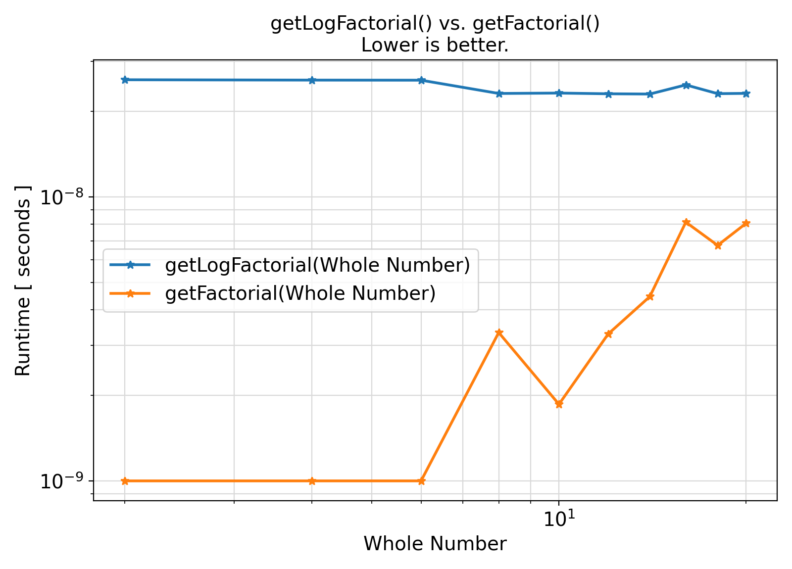
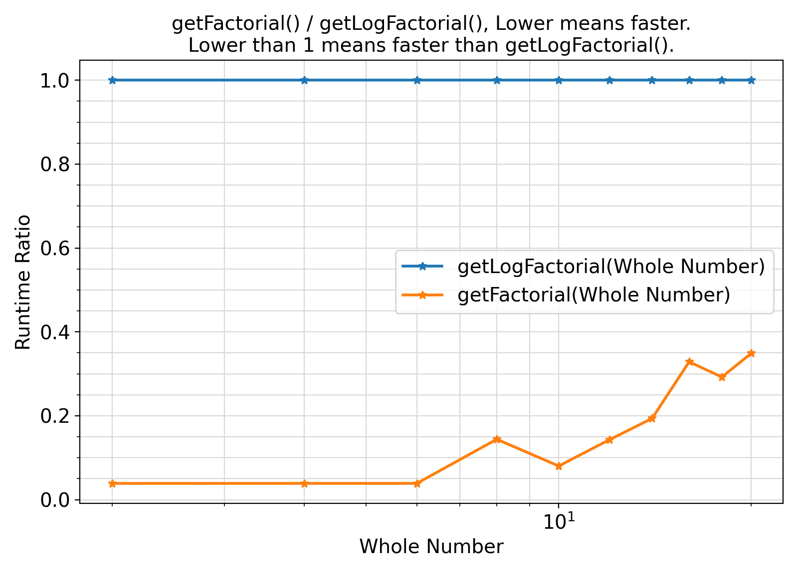

This module contains procedures and generic interfaces for the Factorial function.
More...
This module contains procedures and generic interfaces for the Factorial function.
This module provides a method getFactorial to calculate the factorial of a number. However, note that factorial can easily overflow the integer representations of computers and even real numbers. As such, a better safer method of computing the factorial is to compute its natural logarithm via getLogFactorial.
- Benchmarks:
Benchmark :: The runtime performance of getFactorial vs. getLogFactorial ⛓
4 use iso_fortran_env,
only:
error_unit
13 integer(IK) :: fileUnit
14 integer(IK) ,
parameter :: NPNT
= 10_IK
15 integer(IK) ,
parameter :: NBENCH
= 2_IK
16 real(RKD) :: Point_RKD(NPNT)
17 real(RKD) :: dummy
= 0._RKD
18 real(RKD) :: factorial_RKD
= 0._RKD
19 integer(IKD) :: factorial_IKD
= 0_IKD
20 integer(IKD) :: point_IKD(NPNT)
21 type(bench_type) :: bench(NBENCH)
23 bench(
1)
= bench_type(name
= SK_
"getFactorial", exec
= getFactorial , overhead
= setOverhead)
24 bench(
2)
= bench_type(name
= SK_
"getLogFactorial", exec
= getLogFactorial , overhead
= setOverhead)
26 point_IKD
= getRange(start
= 2_IKD,
stop = 20_IKD, step
= 2_IKD)
27 Point_RKD
= real(point_IKD,
RKD)
30 write(
*,
"(*(g0,:,' '))")
31 write(
*,
"(*(g0,:,' vs. '))") (bench(i)
%name, i
= 1, NBENCH)
32 write(
*,
"(*(g0,:,' '))")
34 open(newunit
= fileUnit, file
= "main.out", status
= "replace")
36 write(fileUnit,
"(*(g0,:,','))")
"Point", (bench(i)
%name, i
= 1, NBENCH)
38 loopOverPoint:
do ipnt
= 1, NPNT
40 write(
*,
"(*(g0,:,' '))")
"Benchmarking with point", point_IKD(ipnt)
46 write(fileUnit,
"(*(g0,:,','))") point_IKD(ipnt), (bench(i)
%timing
%mean, i
= 1, NBENCH)
50 write(
*,
"(*(g0,:,' '))") dummy
51 write(
*,
"(*(g0,:,' '))")
61 subroutine setOverhead()
66 dummy
= dummy
+ factorial_IKD
+ factorial_RKD
69 subroutine getFactorial()
77 subroutine getLogFactorial()
Generate minimally-spaced character, integer, real sequences or sequences at fixed intervals of size ...
Generate and return an object of type timing_type containing the benchmark timing information and sta...
Generate and return the factorial of the input positive integer.
Generate and return the natural logarithm of the factorial of the input positive whole real number.
This module contains procedures and generic interfaces for generating ranges of discrete character,...
This module contains abstract interfaces and types that facilitate benchmarking of different procedur...
This module defines the relevant Fortran kind type-parameters frequently used in the ParaMonte librar...
integer, parameter LK
The default logical kind in the ParaMonte library: kind(.true.) in Fortran, kind(....
integer, parameter IK
The default integer kind in the ParaMonte library: int32 in Fortran, c_int32_t in C-Fortran Interoper...
integer, parameter RKD
The double precision real kind in Fortran mode. On most platforms, this is an 64-bit real kind.
integer, parameter IKD
The double precision integer kind in Fortran mode. On most platforms, this is a 64-bit integer kind.
integer, parameter SK
The default character kind in the ParaMonte library: kind("a") in Fortran, c_char in C-Fortran Intero...
This module contains procedures and generic interfaces for the Factorial function.
This is the class for creating benchmark and performance-profiling objects.
Example Unix compile command via Intel ifort compiler ⛓
3ifort -fpp -standard-semantics -O3 -Wl,-rpath,../../../lib -I../../../inc main.F90 ../../../lib/libparamonte* -o main.exe
Example Windows Batch compile command via Intel ifort compiler ⛓
2set PATH=..\..\..\lib;%PATH%
3ifort /fpp /standard-semantics /O3 /I:..\..\..\include main.F90 ..\..\..\lib\libparamonte*.lib /exe:main.exe
Example Unix / MinGW compile command via GNU gfortran compiler ⛓
3gfortran -cpp -ffree-line-length-none -O3 -Wl,-rpath,../../../lib -I../../../inc main.F90 ../../../lib/libparamonte* -o main.exe
Postprocessing of the benchmark output ⛓
3import matplotlib.pyplot
as plt
9methods = [
"getLogFactorial",
"getFactorial"]
10labels = [label+
"(Whole Number)" for label
in methods]
12df = pd.read_csv(
"main.out")
18ax = plt.figure(figsize = 1.25 * np.array([6.4,4.6]), dpi = 200)
22 plt.plot( df[
"Point"].values
29plt.xticks(fontsize = fontsize)
30plt.yticks(fontsize = fontsize)
31ax.set_xlabel(
"Whole Number", fontsize = fontsize)
32ax.set_ylabel(
"Runtime [ seconds ]", fontsize = fontsize)
33ax.set_title(
"getLogFactorial() vs. getFactorial()\nLower is better.", fontsize = fontsize)
37plt.grid(visible =
True, which =
"both", axis =
"both", color =
"0.85", linestyle =
"-")
38ax.tick_params(axis =
"y", which =
"minor")
39ax.tick_params(axis =
"x", which =
"minor")
47plt.savefig(
"benchmark.getFactorial_vs_getLogFactorial.runtime.png")
53ax = plt.figure(figsize = 1.25 * np.array([6.4,4.6]), dpi = 200)
56plt.plot( df[
"Point"].values
57 , np.ones(len(df[
"Point"].values))
63plt.plot( df[
"Point"].values
64 , df[
"getFactorial"].values / df[
"getLogFactorial"].values
70plt.xticks(fontsize = fontsize)
71plt.yticks(fontsize = fontsize)
72ax.set_xlabel(
"Whole Number", fontsize = fontsize)
73ax.set_ylabel(
"Runtime Ratio", fontsize = fontsize)
74ax.set_title(
"getFactorial() / getLogFactorial(), Lower means faster.\nLower than 1 means faster than getLogFactorial().", fontsize = fontsize)
78plt.grid(visible =
True, which =
"both", axis =
"both", color =
"0.85", linestyle =
"-")
79ax.tick_params(axis =
"y", which =
"minor")
80ax.tick_params(axis =
"x", which =
"minor")
88plt.savefig(
"benchmark.getFactorial_vs_getLogFactorial.runtime.ratio.png")
Visualization of the benchmark output ⛓


Benchmark moral ⛓
- The procedures under the generic interface getFactorial compute the factorial using its default definition while the procedures under the generic interface getLogFactorial use the Fortran intrinsic
log_gamma() to compute the log(factorial) which is then converted to factorial in the benchmark code.
Based on the benchmark results, the safe method of computing the factorial as a real number (thus avoiding the potential numerical overflow) is about 3-5 times slower than the direct definition of the factorial, although the performance gap closes at large input whole numbers.
- Test:
- test_pm_mathFactorial
Final Remarks ⛓
If you believe this algorithm or its documentation can be improved, we appreciate your contribution and help to edit this page's documentation and source file on GitHub.
For details on the naming abbreviations, see this page.
For details on the naming conventions, see this page.
This software is distributed under the MIT license with additional terms outlined below.
-
If you use any parts or concepts from this library to any extent, please acknowledge the usage by citing the relevant publications of the ParaMonte library.
-
If you regenerate any parts/ideas from this library in a programming environment other than those currently supported by this ParaMonte library (i.e., other than C, C++, Fortran, MATLAB, Python, R), please also ask the end users to cite this original ParaMonte library.
This software is available to the public under a highly permissive license.
Help us justify its continued development and maintenance by acknowledging its benefit to society, distributing it, and contributing to it.
- Copyright
- Computational Data Science Lab
- Author:
- Amir Shahmoradi, April 23, 2017, 1:36 AM, Institute for Computational Engineering and Sciences (ICES), University of Texas at Austin